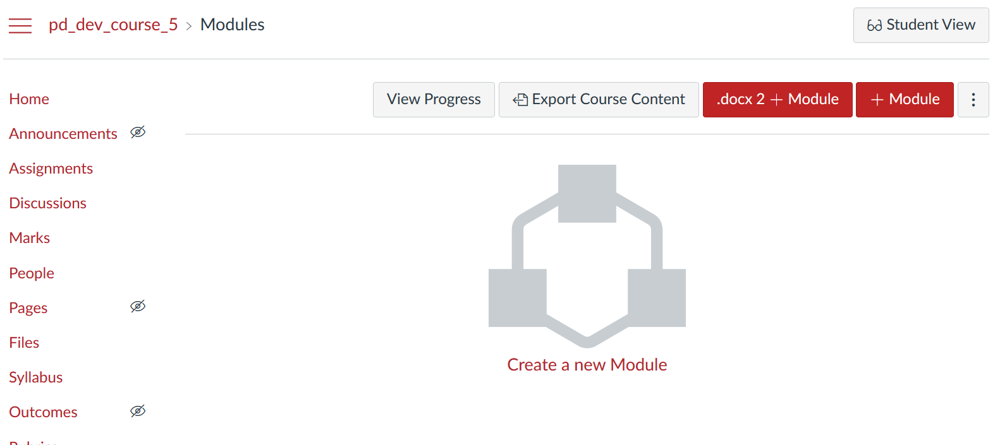

Testing word2canvas
There is a 3-step process to test word2canvas:
Another example
The "sample Word document" walk-through is a screencast of the steps below using the sample w2c.docx document
1. Prepare pre-requisites
To test word2canvas you will need
- A browser with the
word2canvasuserscript installed. - A Canvas course site on which you can create Modules.
- Have downloaded the firstTestDocument.docx file to your computer.
2. Check that word2canvas is active
With word2canvas installed in your browser, go to the Modules page of your Canvas course. Not in Student View. You should see something similar to the following.

The new addition is the .docx 2 + Module button to the left of the + Module button in the top right-hand corner. This button has been added by word2canvas.
If you don't see this button, there is a problem that needs to diagnosed and remedied
3. Use word2canvas with a sample document
Create a new module by clicking the .docx 2 + Module button. This should add the .docx 2 + Canvas Module interface at the top of the page you're viewing. e.g. the following image.
Use the Browse button to select the firstTestDocument.docx file you downloaded. Follow the advice shown and your module should be created and you'll end up with something like the following.